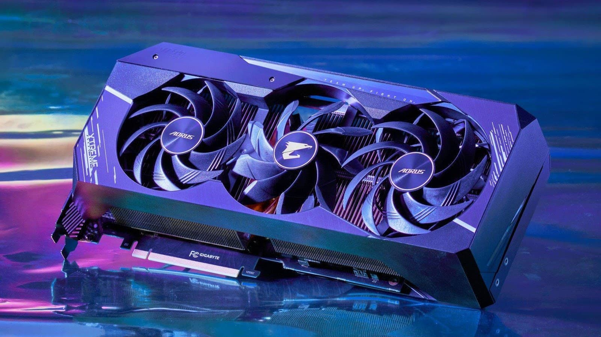
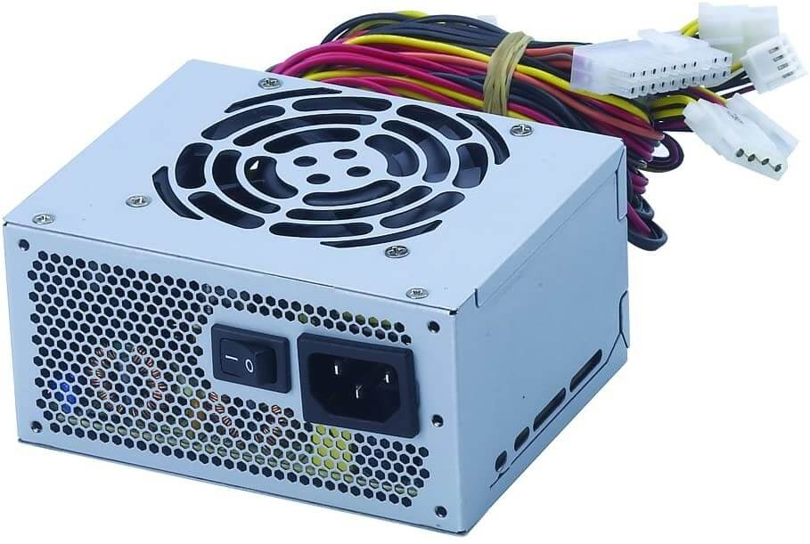

Computer Hardware
Computer hardware is a collective term used to describe any of the physical components of an analog or digital computer. Computer hardware can be categorized as being either internal or external components. Generally, internal hardware components are those necessary for the proper functioning of the computer, while external hardware components are attached to the computer to add or enhance functionality.
External Hardware
External hardware refers to physical devices that are connected to a computer from the outside to enhance its functionality or enable specific tasks. These peripherals are not built into the main computer system but interact with it via wired or wireless connections. Common examples of external hardware include input devices like keyboards and mice, output devices like monitors and printers, and storage devices like external hard drives and USB flash drives. More specialized peripherals, such as scanners, webcams, and external GPUs, expand the computer's capabilities further. Networking hardware, including routers and modems, facilitates internet and network access. These devices are essential for creating a versatile and user-friendly computing environment, allowing users to customize their systems based on their needs. By enabling adaptability and increased performance, external hardware plays a critical role in computing, whether for personal, professional, or industrial applications. Below are some examples of external hardware you can connect to computers.
1. Monitor
A monitor is an output device that displays information being processed in a computer. It receives signals from the computer's graphics card or integrated graphics, interprets the data, and then shows the image or video on the screen, allowing you to see the output of your computer.
2. Mouse
A mouse is a small device that a computer user pushes across a desk surface in order to point to a place on a display screen and to select one or more actions to take from that position.
3. Keyboard
A computer keyboard is an input device that allows a person to enter letters, numbers, and other symbols (together, called characters) into a computer.
4. Printer
A printer is a device that accepts text and graphic output from a computer and transfers the information to paper.
5. Webcam

A digital camera that can be linked to a personal computer and used to transmit live video in real-time.
6. Microphone
A microphone is a device that translates sound vibrations in the air into electronic signals and scribes them to a recording medium or over a loudspeaker.
Internal Hardware
Internal hardware comprises the essential components housed within a computer's casing, responsible for executing its core functions and ensuring seamless operation. These components work together to process data, execute instructions, and store information. The central processing unit (CPU), often referred to as the computer's brain, performs calculations and logical operations. The motherboard acts as the central hub, connecting all internal components, including the CPU, random access memory (RAM), and storage devices like solid-state drives (SSD) or hard disk drives (HDD). RAM provides temporary storage for active processes, enabling quick access to data, while storage drives offer long-term data retention. Graphics processing units (GPU) handle rendering and graphical tasks, essential for gaming, video editing, and 3D modeling. Power is supplied by the power supply unit (PSU), which converts electricity into usable forms for each component. Cooling systems, such as fans or liquid cooling, maintain optimal operating temperatures. Together, these internal hardware components form the backbone of a computer, dictating its speed, efficiency, and capabilities.
1. CPU
The Central Processing Unit (CPU) is the primary component of a computer that acts as its “control center.” The CPU, also referred to as the “central” or “main” processor, is a complex set of electronic circuitry that runs the machine's operating system and apps.
2. Motherboard

A motherboard is the main printed circuit board in a computer. The motherboard is a computer's central communications backbone connectivity point, through which all components and external peripherals connect.
3. RAM

Random-access memory is a form of electronic computer memory that can be read and changed in any order, typically used to store working data and machine code.
4. Storage Device
The storage unit is a part of the computer system which is employed to store the information and instructions to be processed. A storage device is an integral part of the computer hardware which stores information/data to process the result of any computational work. (i.e. Hard Disk Drive, Solid State Drive)
5. Graphics Card
A graphics card, also known as a video card or graphics processing unit (GPU), is a hardware component responsible for rendering and displaying images, videos, and animations on your computer monitor.
6. Power Supply Unit
A power supply unit (PSU) is a hardware device that converts AC electricity into DC electricity and then distributes it to the rest of the computer.
Motherboards
A motherboard is the main printed circuit board in a computer system. The motherboard is a computer's central communications backbone connectivity point, through which all components and external peripherals connect. Motherboards are found in every computer. They contain and connect the essential components that are required for a computer to function. Motherboards manage data flow, optimize power distribution, and enhance computer performance.
There are different types and specifications of motherboards. Components and functionalities within computers stay relatively consistent. But, size and component accommodation can vary based on available space. One example of this is how desktop components are socketed, which makes it easy for replacement, but laptop or smartphone components are soldered, which can make replacement challenging. Manufacturers developed different specifications or form factors for motherboards to suit different computer designs, categorized based on capabilities, features, and the physical size and shape.
Types of Motherboards
1. AT Motherboard
This motherboard was popular in the 1980's. AT stands for Advanced Technical. These motherboards were a specific size and shape, fitting only in AT computer cases. On an AT motherboard, you'd find a big power connector and several slots for extra parts along the bottom edge. The processor is connected in the top right corner. Memory slots were next to the processor. The power connections on these motherboards are in the form of sockets and plugs with six prongs each. Due to the difficulty in recognizing these power connections, users often have issues while trying to connect and operate them.
2. ATX Motherboard
The ATX motherboards are the newer type of motherboard used in most modern computers. It is an enhanced version of the AT motherboard created by Intel in the 1990’s. ATX stands for “Advanced Technology Extended”. These motherboards are the improved version of the older AT motherboards. The power connector is at the top of the board. Slots for the extra parts are along the bottom. The slots are bigger and give more room between the parts. The processor fits in the middle with the memory slots to its right. One big improvement in ATX motherboards is better power management. A new power system was added that lets you turn the computer on and off through the operating system.
3. Extended ATX Motherboard
This motherboard supports a single or a twin CPU configuration and has up to eight RAM slots. Additionally, it has a higher number of PCIe and PCI slots, which may be used to add PCI cards for a wide range of applications. Workstations and servers are both able to use this software. There is sufficient room on all eATX motherboards, making them ideal for desktop computers, thanks to the significant space provided for airflow and the attachment of various components.
4. BTX Motherboard
BTX stands for Balanced Technology Extended. This motherboard was intended to manage the demands of new technologies in terms of more power requirements. Hence, this motherboard generates more heat.
5. LPX Motherboard
LPX stands for Low-Profile Extended. Compared to previous motherboards, this form has two significant enhancements. First is that the input and output ports were moved to the rear of the device. And the second is the addition of a riser card which allows for the device to have additional slots and makes it easier to attach components. Some of these features were implemented to the AT motherboard. The disadvantage of this motherboard is the lack of an accelerated graphics port, which results in a direct connection to PCI. Newer boards called the NLX (New Low Profile Extended) addresses issues in this motherboard.
6. Micro ATX Motherboard
This motherboard has fewer ports and slots than the Standard ATX board. This motherboard is made for users that don't want excessive connections or upgrades to their computers. This motherboard can be installed in any case that can accommodate its size.
Below is a table of the different motherboard form factors and their specifications.
| Form Factor | Size | CPU Slots | Memory Slots | Firmware | PCI Slots | SATA |
|---|---|---|---|---|---|---|
| AT Motherboard | 351 x 305 mm | 1 | 2 - 3 SIMM slots | BIOS | 2 - 4 slots | None |
| ATX Motherboard | 305 x 244 mm | 1 | 4 DIMM slots | UEFI | 3 - 7 | 4 - 8 |
| BTX Motherboard | 325 x 367 mm | 1 | 2 - 4 DIMM slots | BIOS | 3 - 4 | 2 - 6 |
| Extended ATX Motherboard | 305 x 330 mm | 1 - 2 | 8 DIMM slots | UEFI | 4 - 8 | 6 - 10 |
| LPX Motherboard | 229 x 279 - 330 mm | 1 | 2 - 4 SIMM slots | BIOS | 1 - 3 | None |
| Micro ATX Motherboard | 244 x 244 mm | 1 | 4 DIMM slots | UEFI | 2 - 4 | 2 - 6 |
| Mini ITX Motherboard | 170 x 170 mm | 1 | 2 DIMM slots | UEFI | 1 - 2 | 1 - 4 |
| Pico BTX Motherboard | 203 x 267 mm | 1 | 2 DIMM slots | UEFI | 1 - 2 | 1 - 2 |
References
- Awati, R. (2021, October). What is Computer Hardware? Everything You Need To Know. SearchNetworking
- Stanford University. (2020). Computer Hardware. Stanford.edu
- Difference Between Hardware and Software With Their Detailed Comparisons. (n.d.). BYJUS
- Wilson, K. (2022). Exploring Computer Hardware: The Illustrated Guide to Understanding Computer Hardware, Components, Peripherals & Networks. Google Books
- Beal, V. (2021, December 1). What is Hardware?. Webopedia
- AT Motherboard Diagram (n.d.). Escotal
- ATX vs MicroATX vs Mini-ITX: What's the Difference?. Corsair
- BasuMallick, C. (2024, May 13). What Is a Motherboard? Definition, Types, Components, and Functions. Spiceworks
- Bourque, B. (2024, Aug 19). The WIRED Guide to Motherboard Sizes. Wired
- Difference between AT and ATX Motherboard (2024, September 5). GeeksforGeeks
- Kirkcaldy, A. (2024, September 6). Motherboard Sizes Explained – everything you need to know about mobo sizes. PCguide
- Kirvan, P. (2022, June). Motherboard. Techtarget
- Pedamkar, P. (2023, July 23). Types of Motherboard. Educba
- Rowley, R. (2022, March 30). Motherboard Form Factors Explained: Everything You Need To Know. Overclockers UK